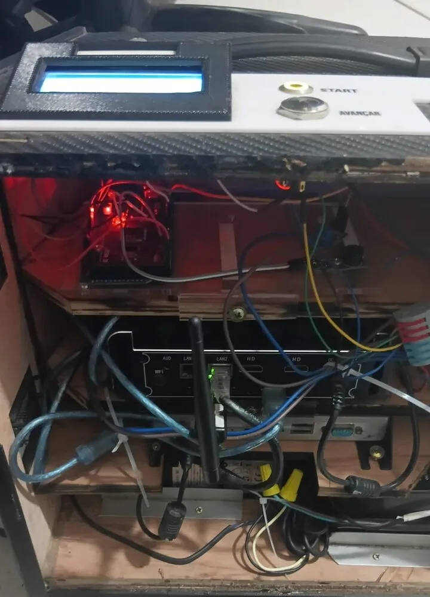
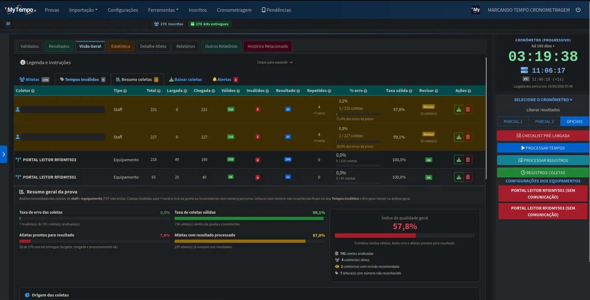
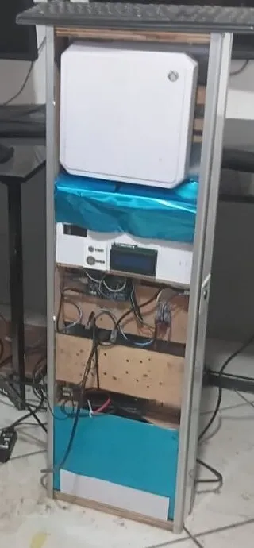

- Role
- Main engineer, from the reader driver to the upload services
- When
- Jul 2024 – Feb 2026, in the field
- Stack
- Go, Python, C++, Arduino, RabbitMQ, SQLite, Docker, systemd, Arch Linux
What it is
Each unit is a small Arch Linux PC wired to an RFID reader (Chafon or Impinj), an Arduino Mega with a 20×4 LCD and two buttons, and a 12 V battery. An offline half runs for the whole event without internet; an online half runs on demand to sync with the MyTempo API.


Design decisions
- Offline first. Races happen where the signal is bad, so reading and storing never depend on the network. Uploading is a separate step you can retry, from the screen or every 5 minutes.
- A broker between the reader and everything else. The reader only publishes to RabbitMQ. Storage and the screen each get their own queue, so a slow LCD never blocks writes.
- Store everything, decide later. No filtering at read time. Start and finish times are worked out in SQL at upload, once the track windows from the API are known.
- Many small SQLite files. SQLite allows one writer per file, so reads are sharded by bib number: bib 1234 goes to
N123.db, each file with its own writer goroutine. - Named pipes as the control plane. Containers ask the host for things by writing a word into a FIFO. No sockets, no polling.
- Crash and restart. Services exit on errors they can't recover from and Docker restarts them; the Chafon SDK only reconnects reliably after a full restart anyway.
Code
Envio picks the SQLite file for each read and grows the set of files as higher bib numbers show up.
func (m *MADB) Insert(c athlete.Atleta) (err error) {
if c.Numero > m.maxValue {
err = m.Grow(((c.Numero - m.maxValue) / m.groupSize) + 1)
if err != nil {
return
}
}
if c.Numero == m.maxValue {
err = m.Grow(1)
if err != nil {
return
}
}
err = m.databases[c.Numero/m.groupSize].Insert(c)
return
}History
- Jul–Oct 2024Container layout, the reader service, the C++ extension for the Chafon SDK, Receba, and a MySQL/PHP storage backend.
- Jan–Feb 2025The screen runs Forth on the Arduino, in three versions. The Forth screen →
- Mar 2025MySQL replaced by sharded SQLite, which took a server off a battery-powered box. Reenvio uploads times.
- Mar–Apr 2025Provost resets Wi-Fi and 4G; the Arduino is rewritten in C++ with on-screen actions.
- Dec 2025Chip validation at kit pickup; configurable API URL.
- Feb 2026Unified backup and upload, 5-minute auto-upload, antenna signal bars.
After that I replaced this design with a simpler one: raw reads streamed over MQTT and processed in the cloud. Events ran without incidents from then on.
More pictures


